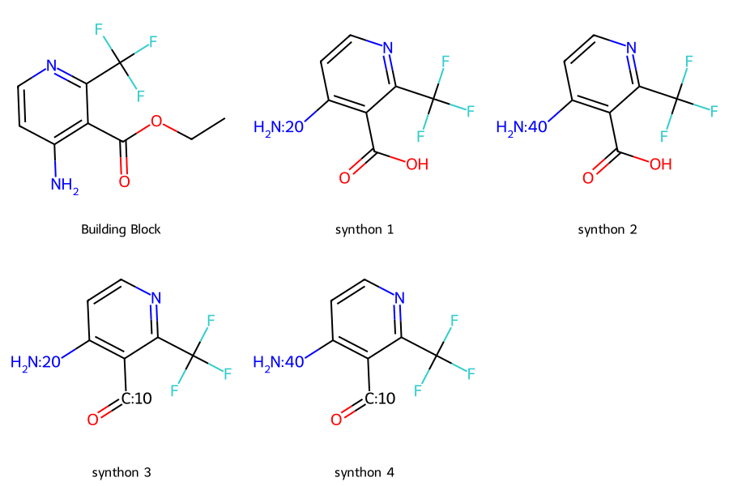
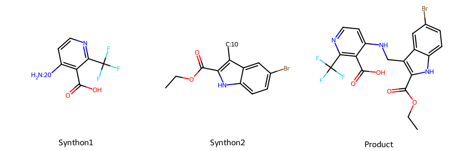
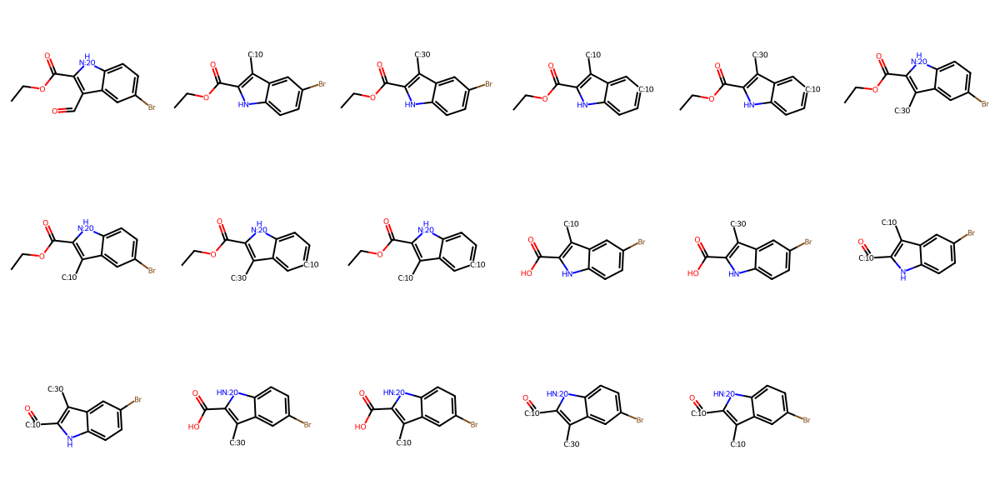
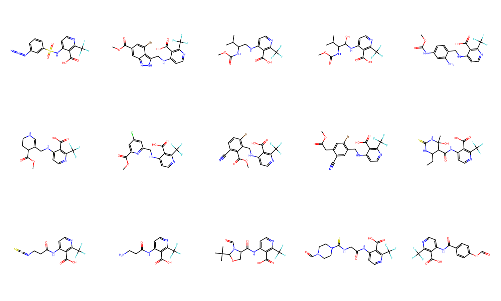

from chem_templates.utils import *
from chem_templates.chem import Molecule
from chem_templates.building_blocks import molecule_to_synthon, REACTION_GROUPS, ReactionUniverse
from chem_templates.assembly import AssemblyInputs, SynthonNode, SynthonLeafNode
from chem_templates.filter import (
RangeFunctionFilter,
ValidityFilter,
SingleCompoundFilter,
SmartsFilter,
Template
)
from rdkit.Chem import rdMolDescriptors, Descriptors
from rdkit.Chem import DrawBuilding Block Tutorial
How to assemble building blocks with templates
This tutorial shows how to use chem_templates building block assembly.
Building blocks are chemical subunits that can be assembled via easy chemistry. Building blocks are a simple way to combinatorially generate diverse compounds. The chem_templates building block functions allow us to assemble molecules from building blocks and screen building blocks, intermediate products, and the final molecule with specific Template filters.
In this example, we will look at the simple case of assembling a molecule from two building blocks - BB1 + BB2 -> product.
We can accomplish this with the following steps: 1. define templates 2. create synthon library 3. define assembly schema 4. assemble molecules
Define Templates
We need a template for each building block, as well as the final product. For simplicity, we will use Rule of 3 filters for the individual building blocks, and the Rule of 5 filters for the final molecule
def hbd(molecule):
return rdMolDescriptors.CalcNumHBD(molecule.mol)
def hba(molecule):
return rdMolDescriptors.CalcNumHBA(molecule.mol)
def molwt(molecule):
return rdMolDescriptors.CalcExactMolWt(molecule.mol)
def logp(molecule):
return Descriptors.MolLogP(molecule.mol)
def rotb(molecule):
return rdMolDescriptors.CalcNumRotatableBonds(molecule.mol)# building block
bb_template = Template([
RangeFunctionFilter(hbd, 'hydrogen_bond_donors', None, 3),
RangeFunctionFilter(hba, 'hydrogen_bond_acceptors', None, 3),
RangeFunctionFilter(molwt, 'molecular_weight', None, 300),
RangeFunctionFilter(logp, 'CLogP', None, 3),
RangeFunctionFilter(rotb, 'rotatable_bonds', None, 3)
])
# full
full_template = Template([
ValidityFilter(),
SingleCompoundFilter(),
RangeFunctionFilter(hbd, 'hydrogen_bond_donors', None, 5),
RangeFunctionFilter(hba, 'hydrogen_bond_acceptors', None, 10),
RangeFunctionFilter(molwt, 'molecular_weight', None, 500),
RangeFunctionFilter(logp, 'CLogP', None, 5),
SmartsFilter('[CX3](=O)[OX2H1]', 'carboxylic_acid',
exclude=True, min_val=2, max_val=None), # at most 1 carboxylic acid in final molecule
SmartsFilter('[CX3](=[OX1])OCC', 'carboxylic_ester',
exclude=True, min_val=1, max_val=None) # no carboxylic acid reactive group in final molecule
])Create Synthon Library
Now we need to create a library of synthons. A synthon is a hypothetical molecule that represents a building block after reaction. Reactive groups are converted to placeholder molecules. Later, we will use the placeholders to simulate building block assembly. A single molecule can have multiple synthons.
molecule = Molecule('CCOC(=O)c1c(N)ccnc1C(F)(F)F')
synthons = molecule_to_synthon(molecule)
Draw.MolsToGridImage([molecule.mol]+[i.mol for i in synthons],
legends=['Building Block'] + [f'synthon {i+1}' for i in range(len(synthons))],
subImgSize=(300,300))
building_blocks = ['CCOC(=O)c1c(N)ccnc1C(F)(F)F',
'COC(=O)C(C)N=C=O',
'CCOC(=O)c1[nH]c2ccc(C)cc2c1N',
'COC(=O)c1c(N)sc2c1CCC(C)C2',
'O=C(NC[C@@H]1C[C@H](F)CN1)OCc1ccccc1',
'O=C(NCC1CCNCC1)OCc1ccccc1',
'NCC1CCCN(C(=O)OCc2ccccc2)C1',
'CC(C)(CN)NC(=O)OCc1ccccc1',
'O=C(NCC1CCCCN1)OCc1ccccc1',
'C[C@@H]1CNCCN1C(=O)OCc1ccccc1',
'NCC1CCN(C(=O)OCc2ccccc2)C1',
'CCC1CNCCN1C(=O)OCc1ccccc1',
'CNC1CCN(C(=O)OCc2ccccc2)CC1',
'NC[C@@H]1CCN(C(=O)OCc2ccccc2)C1',
'NC1CCN(C(=O)OCc2ccccc2)CC1F',
'NC[C@H]1CCCN1C(=O)OCc1ccccc1',
'N[C@@H]1C[C@H](C(=O)O)N(C(=O)OCc2ccccc2)C1',
'O=C(OCc1ccccc1)N1CCN[C@H](Cc2ccccc2)C1',
'O=C(OCc1ccccc1)N1CCC2(CCCCN2)C1',
'O=C(OCc1ccccc1)N1CCCC2NCCC21',
'C[C@H](N)C(=O)NCC1CCCCN1C(=O)OCc1ccccc1',
'CC(C)[C@H](N)C(=O)N1CCCCC1CNC(=O)OCc1ccccc1',
'NCC(=O)N1CCCC(CNC(=O)OCc2ccccc2)C1',
'O=C(O)CN[C@@H]1CCCN(C(=O)OCc2ccccc2)C1',
'CCN(C(=O)OCc1ccccc1)C1CCNCC1',
'NCC(=O)NC[C@@H]1CCCN1C(=O)OCc1ccccc1',
'C[C@H](N)C(=O)NC[C@@H]1CCCN1C(=O)OCc1ccccc1',
'CCN(C(=O)OCc1ccccc1)[C@@H]1CCN(C(=O)CN)C1',
'CCN(C(=O)OCc1ccccc1)[C@H]1CCN(C(=O)[C@H](C)N)C1',
'CC(C)NC[C@@H]1CCCN1C(=O)OCc1ccccc1',
'O=C(OCc1ccccc1)N(CC1CCNC1)C1CC1',
'CCN(C(=O)[C@H](C)N)C1CCCCC1NC(=O)OCc1ccccc1',
'CNC1CCCCC1N(C(=O)OCc1ccccc1)C(C)C',
'O=C(NC[C@@H]1CNCCO1)OCc1ccccc1',
'CN(C(=O)OCc1ccccc1)C1CCCNC1',
'O=C(OCc1ccccc1)N1C[C@H]2CNCC[C@H]21',
'O=C(OCc1ccccc1)N1CCCC2(CCN2)C1',
'NC1(C(F)(F)F)CCN(C(=O)OCc2ccccc2)CC1',
'NC1CCCCN(C(=O)OCc2ccccc2)C1',
'CCOC(=O)C(OC(=O)C(Cc1ccccc1)NC=O)c1ccccc1',
'COC(=O)c1cc(-c2c(F)cccc2COC(=O)C(Cc2ccccc2)NC=O)ccc1F',
'COC(=O)c1ccc(F)c(-c2cc(COC(=O)C(Cc3ccccc3)NC=O)ccc2F)c1',
'COC(=O)c1cccc(-c2cccc(COC(=O)C(Cc3ccccc3)NC=O)c2C)c1',
'CCOC(=O)c1[nH]c2ccc(Br)cc2c1C=O',
'COC(=O)COc1c(Cl)cc(C=O)cc1Cl',
'COC(=O)C(NNc1ccccc1)(NC(=O)CC(C)C)C(F)(F)F',
'CCOC(=O)COc1ccc(Cl)cc1C=O',
'CCOC(=O)c1c(C)c(C=O)n(C)c1C',
'CCOC(=O)c1nc2cc(C)ccn2c1C=O',
'COC(=O)Cn1cc(C=O)c2cc(OC)ccc21',
'CCOC(=O)c1nn(-c2ccc(Cl)cc2)cc1C=O',
'CCOC(=O)C1CCN(c2ccccc2C=O)CC1',
'COC(=O)c1cc(F)cc(C=O)c1F',
'COC(=O)c1cccc(C=O)c1OC',
'COC(=O)c1cc(Br)c2c(C=O)n[nH]c2c1',
'COC(=O)c1c(C=O)c(C)n(C)c1C',
'CCOC(=O)c1nn(-c2cccc(Cl)c2)cc1C=O',
'COC(=O)C(C)(C)CC=O',
'COC(=O)c1ccc(Cl)c(C=O)c1',
'COC(=O)c1oc(C=O)cc1C',
'COC(=O)c1c[nH]c(C=O)c1C1CC1',
'COC(=O)c1ncc(C=O)cc1Cl',
'CCOC(=O)c1c(Cl)ccc(C=O)c1F',
'COC(=O)CC=O',
'CCOC(=O)C1CCCCN1c1ccccc1C=O',
'CCOc1ccc(C(=O)OC)cc1C=O',
'COC(=O)N[C@H](C=O)C(C)C',
'COC(=O)Nc1ccc(C=O)c([N+](=O)[O-])c1',
'COC(=O)c1cc2n(c1C=O)CCCC2',
'CCOC(=O)c1cn(C)c2cc(C=O)ccc2c1=O',
'COC(=O)C1CCN(C(=O)OC(C)(C)C)C=C1C=O',
'CCOC(=O)c1ncn(C)c1C=O',
'CCOC(=O)c1cc(F)c(C=O)cc1F',
'CCOC(=O)Cc1cccc(C=O)c1',
'COC(=O)C(Cl)=C(Cl)C=O',
'COC(=O)c1cccc(NC(=O)C=O)c1',
'CCOC(=O)c1cc2cc(C=O)sc2[nH]1',
'COC(=O)Cn1cc(C=O)c(C(F)(F)F)n1',
'CCOC(=O)C1(CC=O)CCCN(C(=O)OC(C)(C)C)C1',
'COC(=O)/C=C/C=O',
'COC(=O)c1cc(Cl)cc(C=O)n1',
'CCOC(=O)c1c(C#N)cc(Br)cc1C=O',
'COC(=O)C(C=O)c1cccc(F)c1',
'COC(=O)c1c(C#N)ccc(Br)c1C=O',
'CCOC(=O)Cc1cc(Br)c(C=O)cc1C#N',
'COC(=O)Cc1cc(Br)c(C=O)cc1C#N',
'CCOC(=O)c1[nH]c2c(C)cc(F)cc2c1C=O',
'CCOC(=O)C1C(CC)NC(=S)NC1(C)O',
'O=C(O)CCN=C=S',
'COC(=O)[C@@H]1CO[C@H](C(C)(C)C)N1C=O',
'CCOC(=O)CNC(=S)N1CCN(C=O)CC1',
'COC(=O)c1ccc(OC=O)cc1',
'[N-]=[N+]=Nc1cccc(S(=O)(=O)F)c1',
'COC(=O)c1ccc(C)c(S(=O)(=O)Cl)c1',
'COC(=O)c1c(Cl)ccc(S(=O)(=O)Cl)c1Cl',
'COC(=O)c1ccc(S(=O)(=O)Cl)cc1Cl',
'CCOC(=O)c1ccc(F)c(S(=O)(=O)Cl)c1',
'CCOC(=O)C(C)S(=O)(=O)Cl']molecules = [Molecule(i) for i in building_blocks]
synthons = deduplicate_list(flatten_list([molecule_to_synthon(i) for i in molecules]),
key_func=lambda x: x.smile)
len(synthons)468We can check the compatibility between two synthons to see if they can react:
# note exact index values may change
s1 = synthons[0]
s2 = synthons[153]
print(s1.is_compatible(s2))TrueTo actually react them, we need to use a reaction template. Reactions are represented in the following way:
- A
FusionReactionholds a specific set of reaction SMARTS. - A
ReactionGroupholds severalFusionReactionof the same reaction type (ie there are multiple N-acylation reaction SMARTS) - A
ReactionUniverseholds a list ofReactionGroupobjects
Several reaction groups are provided:
for item in REACTION_GROUPS:
print(item)Reaction Class: O-acylation
Reaction: Alcohol/Phenol acylation
Reaction: O-Acylation by O=C(+)-X reagents
Reaction: O-Acylation of O-X compounds
Reaction Class: Olefination
Reaction: Knovenagel-, Wittig-, Julia-Kocienski- type reactions
Reaction: Olefin Metathesis
Reaction Class: Condensation_of_Y-NH2_with_carbonyl_compounds
Reaction: Condensation of Y-NH2 with carbonyl compounds
Reaction Class: Amine_sulphoacylation
Reaction: Amine sulphoacilation
Reaction Class: C-C couplings
Reaction: Suzuki cross-coupling C(Ar)- C(Ar)
Reaction: Suzuki coupling C(sp2) - C(sp2)
Reaction: Heck and Suzuki coupling C(Ar) - C(sp2)
Reaction: Sonogashira coupling C(Ar) - C(sp)
Reaction: Novel methods for C(Ar)-C(sp3) coupling
Reaction: Novel methods for C(Ar)-C(sp3) coupling with boronics
Reaction Class: Radical_reactions
Reaction: Minisci reaction and Baran diversinates C(Ar)-C(sp3)
Reaction: Giese reaction C(sp3) - C(sp3)
Reaction Class: N-acylation
Reaction: Amine acylation
Reaction: N-Acylation of RN-X compounds
Reaction: N-Acylation by O=C(+)-X reagents (except isocyanates - R1.4)
Reaction: Amine acylation by isocyanates or analogues
Reaction Class: O-alkylation_arylation
Reaction: O-SN alkylation
Reaction: Cu-mediated C-O coupling
Reaction: O-C Chan-Evans-Lam coupling
Reaction: N-O-alkylation
Reaction Class: Metal organics C-C bong assembling
Reaction: Addition of Li, Mg, Zn organics to aldehydes and ketones
Reaction: Acylation of Li, Mg, Zn organics
Reaction Class: S-alkylation_arylation
Reaction: S-alkylation arylation
Reaction: Simple alkylation of sulphinic acid salts
Reaction: Cu-catalyzed arylation of sulphinic acid salts
Reaction Class: Alkylation_arylation_of_NH-lactam
Reaction: NH-lactam SN alkylation
Reaction: NH-lactam Chan-Evans-Lam coupling
Reaction: NH-lactam Cu-mediated C-N coupling
Reaction Class: Alkylation_arylation_of_NH-heterocycles
Reaction: nH-SN alkylation
Reaction: nH-Chan-Evans-Lam coupling
Reaction: nH-Cu-mediated C-N coupling
Reaction Class: Amine_alkylation_arylation
Reaction: SN alkylation of amines
Reaction: Buchwald-Hartwig amination(BHA), Cu-mediated C-N coupling
Reaction: Umpolung cross-coupling
Reaction: Tertiary amines alkylation arylationFor this example, we will create a ReactionUniverse with all the available groups. Note that currently there are no cheminformatics checks on reaction compatibility for multiple reaction chains.
rxn_universe = ReactionUniverse('all_rxns', REACTION_GROUPS)Now we can see which reactions match a compatible synthon pair
matching_rxns = rxn_universe.get_matching_reactions(s1, s2)
print(matching_rxns)[Reaction: SN alkylation of amines]rxn = matching_rxns[0]
product = rxn.react(s1, s2)Draw.MolsToGridImage([s1.mol, s2.mol, product[0].mol], legends=['Synthon1', 'Synthon2', 'Product'],
subImgSize=(300,300))
A note on working with synthons:
In the above, synthon1 and synthon2 still have reactive groups present on the molecule (carboxylic acid and carboxylic ester). This is because we generate a variety of synthons for each input building block based on the functional groups and reaction pathways available (see image below).
If you want to ensure specific reactive groups or protecting groups aren’t present on final molecules, use a SMARTS filter in your template to eliminate them
Draw.MolsToGridImage([i.mol for i in molecule_to_synthon(s2.data['parents'][0])], molsPerRow=6)
Define Assembly Schema
Now we define how our building blocks will fit together.
First we define our leaf nodes with the SynthonLeafNode class. Each leaf node has a name, a set of n_func values, and a template.
The n_func values define how many functional groups a building block is allowed to have. So n_func=set([1]) would only allow building blocks with 1 functional group. n_func=set([2,3]) would allow building blocks with 2-3 functional groups.
Note that as discussed above, n_func looks at the annotated functional groups on the synthon, so will not exclude multi-functional building blocks with un-annotated groups.
Since we want to assemble two building blocks into a final molecule, we will set n_func=set([1]) for each building block:
bb1 = SynthonLeafNode('bb1', set([1]), bb_template)
bb2 = SynthonLeafNode('bb2', set([1]), bb_template)Now we make the product node with the SynthonNode class, passing in our input nodes and reaction universe
prod = SynthonNode('product', bb1, bb2, rxn_universe, set([0]), full_template)Assemble Library
To assemble, first we run prod.build_assembly_pools(synthons) which builds a dictionary of assembly pools based on which synthons match the n_func and template specifications at the leaf nodes.
Then we create the AssemblyInputs and pass them to prod.assemble(assembly_inputs)
assembly_dict = prod.build_assembly_pools(synthons)
assembly_dict{'bb1': AssemblyPool: 180 items, 'bb2': AssemblyPool: 180 items}assembly_inputs = AssemblyInputs(assembly_dict, 1000, 1000)assembled = prod.assemble(assembly_inputs)
assembledbb1
bb2
productAssemblyPool: 1497 itemsNow we can review the assembled molecules. We can see some of these still contain reactive groups. These can be triaged if needed by adding additional smarts filters
Draw.MolsToGridImage([assembled[i].mol for i in range(15)], molsPerRow=5, subImgSize=(300,300))
Other Assembly Schemas
Consider assembling 3 building blocks. Our assembly schema would follow: * select first building block * select second building block * select matching reactions * react and generate products * select third building block * select matching reactions * react and generate products
We may want to impose different potential reactions at each step. We can do this by specifying different ReactionUniverse at the different product nodes. An example schema would look something like this:
bb1 = SynthonLeafNode('bb1', set([1]), bb_template1) # first building block with 1 functional group
bb2 = SynthonLeafNode('bb2', set([2]), bb_template2) # middle building block with 2 functional groups
bb3 = SynthonLeafNode('bb3', set([3]), bb_template3) # final building block with 1 functional group
product1 = SynthonNode('product1', bb1, bb2, rxn_universe1,
set([1]), prod1_template) # first product with 1 remaining functional group
product2 = SynthonNode('product2', product1, bb3, rxn_universe2,
set([0]), prod2_template) # final product with 0 remaining functional groups